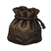

Character Setup
Manage skill levels, pets, museum items, inventory, and named gear sets for your simulations.
Save import · Gear sets · Character bonuses
Set Up Your Character Estimate rare gathering finds, test a combat loadout, and plan your next level. Everything runs locally in your browser.
Manage skill levels, pets, museum items, inventory, and named gear sets for your simulations.


Calculate nests, gem bags, and underwater chests. Compare resources, pets, armor, and rarity bonuses.
Build your character, choose an encounter, and simulate a hunt with equipment, supplies, and world bonuses.

Plan levels across ten skills with tools, pets, blessings, potions, and candies. Estimate training time and materials.
Look up items and pets, where they drop or can be stolen, and which skills produce them at each level.
Plan equipment upgrades with a source-based view of forging rules, material requirements, and outcomes.
Estimate gathering boss damage and chest chances for one attempt.
Stockpile months of buffs. Compare haunted monsters using your kills per hour and drop bonuses.
The guides use the bundled 4.1.3.8 game rules. Each page explains its formulas, assumptions, and limits.
Try different resources, equipment, and bonuses to see how they change your expected results.